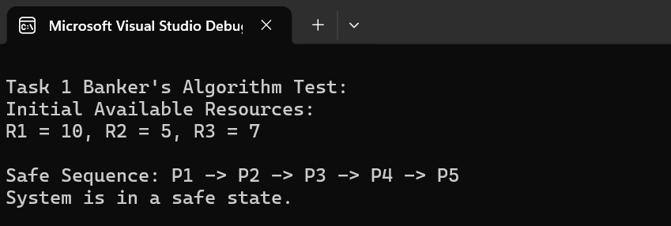
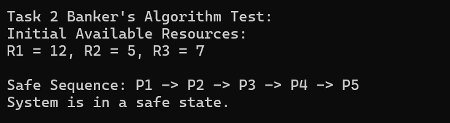
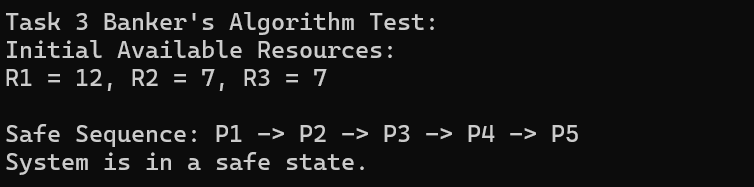
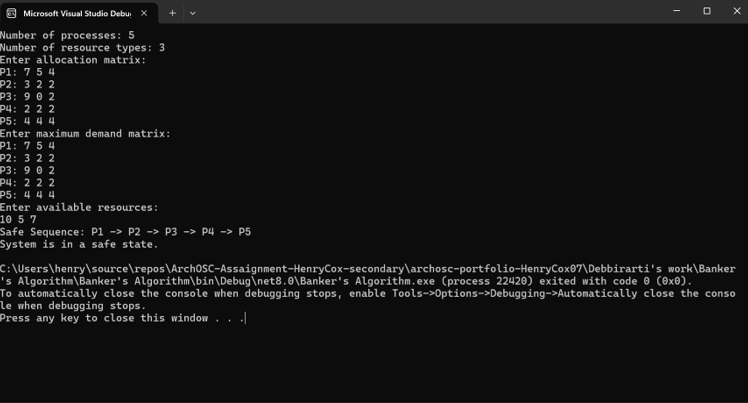
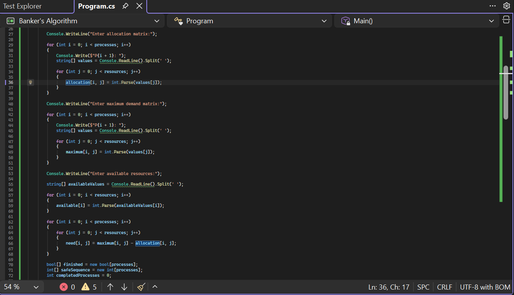
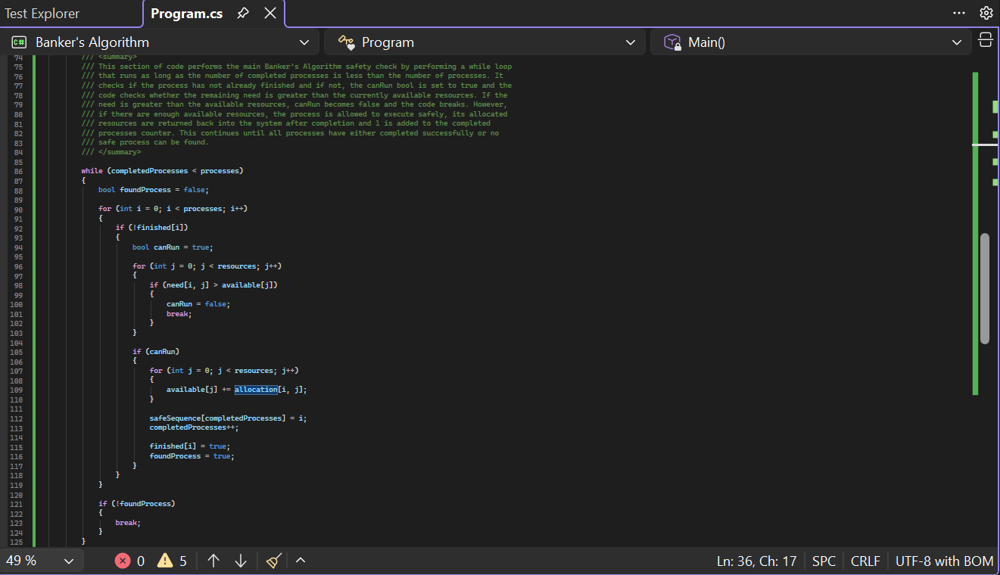
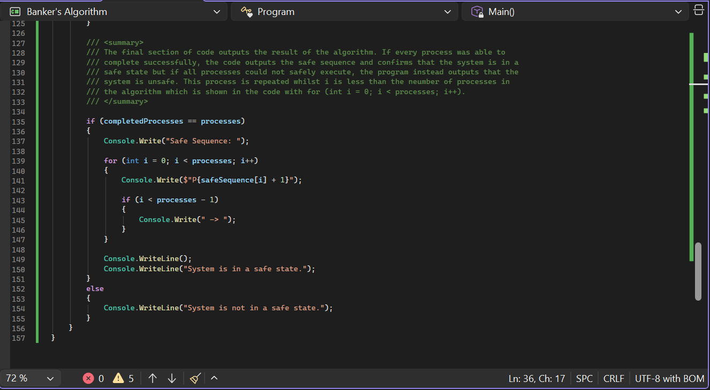

What is Banker's Algorithm:
In this lab I had to use Banker's algorithm to check if all the processes in the system I was provided could be safely executed with the resources that are available to it. The reason that we need to use Banker's algorithm is to prevent an operating system (OS) from reaching a deadlock. The Banker's algorithm stops this by checking whether allocating resources to a process would leave the system in a safe state; for a system to be in a safe state it must be able to eventually complete all tasks, not get stuck and properly release the resources it uses. The check is performed by checking how many resources are currently available, checking how many more resources each process needs to complete, simulating the processes being executed and then determining if there is a safe sequence for all the processes to finish. If it is successful, the request is allowed but if not the request to complete the processes is denied.
What is deadlock:
A deadlock is an instance where one or more processes become permanently stuck, preventing other processes from continuing execution. This is bad for systems as it not only stops systems from working but also wastes resources.
Task 1:
For task 1, the resources available to the system were R1 = 10, R2 = 5 and R3 = 7. Whilst checking if the processes could safely execute, the algorithm compared the allocation matrix, which shows the resources that are currently assigned to each process in the system, and the maximum demand matrix, which shows the maximum amount of resources each process may require to complete successfully. These were both identical.
Banker's Algorithm compares these matrices to calculate the remaining resources needed by each process before execution can safely continue. Due to being identical, each process had a remaining need of 0; due to this all the processes already had the resources they needed to complete successfully. Evidence to support this is the sequence that the program generated as they were all able to finish in sequential order, meaning they all had the resources needed for them to complete in the original order.

Task 2:
For task 2, the algorithm was provided with more resources as R1 went up from 10 to 12 whilst R2 and R3 still kept their 5 and 7 resource values. Similarly to the first task, the algorithm compared the allocation demand matrix and the maximum demand matrix which were still identical.
Due to this, the processes in task 2 also had a remaining need of 0 and already had all the resources they needed to pass, which can be seen with the safe sequence that the program outputs. All that happened was the system was provided with more resources to complete the processes it was already completing.

Task 3:
This time, for task 3, the resource value R2 was increased from 5 to 7 whilst R1 and R3 stayed at 12 and 7 respectively. Just like the previous two tasks, the allocation demand matrix and maximum demand matrix were identical meaning that the remaining need was still 0.
Due to this, all the processes were completed successfully in the same safe sequence as the last two tests. The outcome of the test was the same as task 2; all the processes were completed successfully but the system had more resources to work with. This is a benefit to the system as it reduces the chances that a process has to wait to be completed, meaning that the processes may finish more efficiently.

Task 4:
For Task 4 I had to create a C# program to simulate a Banker's Algorithm that allowed the user to input the processes, the number of resource types, as well as the allocation and demand matrix. Once the user put the details into the system, arrays were created to store the information to be used later on.
Then, the program calculated the need matrix by subtracting the allocation matrix from the maximum demand matrix. This allowed the algorithm to determine how many more resources each process still required before it could complete execution safely.
The main section of the program performed the Banker's Algorithm safety check using a while loop which checked each unfinished process and compared its remaining need with the currently available resources. If a process could safely execute, it was added to the safe sequence, marked as completed and its allocated resources were returned into the system. This continued until all processes completed successfully or no safe process could be found.
When the program was tested using the values provided in the assignment, the algorithm generated the safe sequence:
P1 → P2 → P3 → P4 → P5
This confirmed that the system was in a safe state because every process was able to complete successfully without causing a deadlock.



